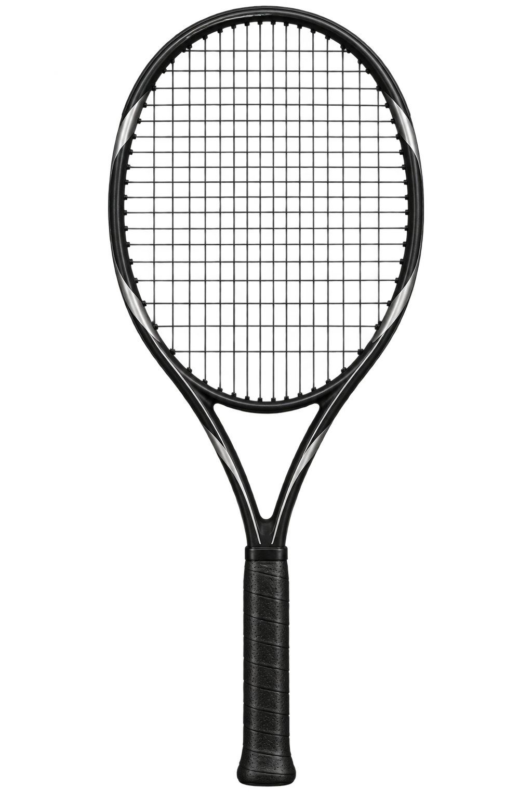
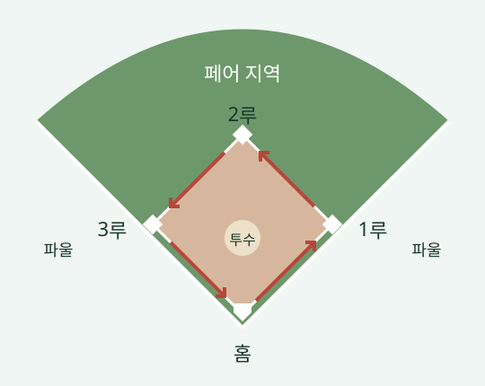
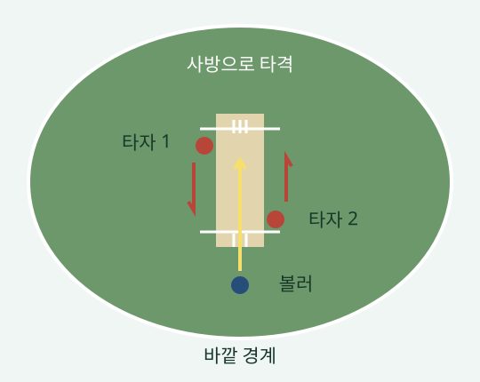

왼팔의 상완 내전이 중요하다. 오른팔의 힘을 빼고, 테이크백 시 오른 손목을 뒤로 꺾어 자연스러운 스윙 자세를 만든다.
바브린카 스윙 · 원핸드 백핸드
사용 상황 느린 공이나 미리 자세를 준비한 상황에서만 공격적인 스윙으로 사용한다. 타점이 몸 앞에 있으므로 빠른 준비가 필수다.
구질과 안정성 낮은 공을 강한 상향 스윙으로 감아 올린다. 네트 위를 높게 넘겨 코트 안에 안정적으로 떨어뜨리고, 높고 빠르게 튀어 오르게 한다. 라켓 면의 불안정함은 안정적인 탑스핀 스윙을 결합해 보완한다. 결론적으로 포핸드 나달 스윙의 강한 탑스핀과 파워를 함께 가져가는 구질과 유사하다.
큰 몸통 회전을 사용한다
모든 스윙 중 가장 큰 몸통 회전을 활용한다. 임팩트 시에는 다른 원핸드 백핸드와 달리 몸이 거의 전방을 바라보도록 회전한다.
다운스윙에서 레버 길이와 코일링을 만든다
팔을 쭉 펴 레버 길이를 늘린다. 다운스윙 시 팔꿈치를 외전해 코일링을 만든다.
임팩트에서 코일링을 푼다
팔꿈치를 내전하면서 코일링을 푸는 힘으로 스윙한다.
스트링은 낮은 텐션과 스핀 성능 위주의 세팅을 사용한다.
슬라이스와 드롭샷
슬라이스 · 포핸드와 백핸드
느리게 날아가고 낮게 튀어 오르는 구질이다. 스윙 방향에 따른 공격성과 안정성을 구분한다.
다운더라인 / 스윙하는 손과 같은 방향
공격적인 선택
코트 밖 방향으로 튀어 올라 공격적이지만, 아웃에 주의해야 한다.
크로스 방향 / 스윙하는 손의 반대 방향
안정적인 선택
코트 안으로 감겨 들어온다. 공격성은 낮아지고 안정성은 높아진다.
드롭샷
동작 구사 직전까지 강한 스윙을 할 것처럼 다운스윙한 뒤, 갑작스럽게 드롭샷으로 전환한다.
사용 상황 강한 스트로크로 상대를 코트 뒤로 많이 물러나게 했을 때 활용하기 좋다.
서브와 발리
서브
01 / FLAT
플랫 서브
공을 플랫하게 통과하는 스윙으로 구사한다. 가장 빠르고 공격적인 서브다.
02 / TOPSPIN
탑스핀 서브
공을 위로 긁어 탑스핀을 만든다. 공이 코트 안에 안정적으로 들어가고, 많이 튀어 오르는 특징이 있다.
03 / KICK
킥 서브
공을 옆으로 긁어 사이드스핀을 만든다. 공이 왼쪽으로 휘어 나가는 서브다.
발리
목표 네트 앞으로 뛰어나가 상대 코트의 네트 바로 앞에 공이 뚝 떨어지도록 한다.
사용 상황 상대가 한쪽 사이드로 깊게 들어가면 스트로크가 네트 앞을 통과하는 각도가 좁아져 발리를 활용하기 좋다. 특히 상대가 뛰어서 사이드 안쪽으로 들어갈 때 유리하다.
나의 라켓 스펙

MY RACKET SPEC
헤드 사이즈
98–100
무게
300–315스트링 장착 시 15–20 증가
헤드 밸런스
320 이하스트링 장착 시 330 이하
스윙웨이트
무게·밸런스 대비 높은 라켓대략 스트링을 장착한 무게보다 높은 수치로 설정
강성
66 이상
스트링 패턴
16 / 19 또는 20
야구·크리켓 룰북접기펼치기
야구는 한 바퀴, 크리켓은 자리 교환

야구 · 베이스를 돌아 홈으로홈 → 1루 → 2루 → 3루 → 홈 = 1점

크리켓 · 두 타자가 끝을 바꾼다두 명 모두 반대편 안전선 도착 = 1런
이 4가지만 비교하면 된다
기준야구크리켓
득점주자가 홈에 오면 1점자리 교환 1런 / 경계 타구 4·6런
공격 종료3아웃마다 교대보통 10명 아웃 또는 제한 투구 소진
헛스윙3스트라이크는 삼진헛스윙만으로 아웃 아님
타구 방향파울선 사이가 페어사방으로 칠 수 있음
크리켓은 이렇게 진행된다
두 명 모두 반대편에 도착하면 1런
A는 왼쪽에서 오른쪽으로, B는 오른쪽에서 왼쪽으로. 둘이 자리를 한 번 바꾸면 팀에 1런. 둘 다 다시 돌아오면 누적 2런이다.
한 명만 도착하면 아직 1런이 아니다. 안전선 너머 지면에 몸이나 손에 든 배트를 대면 도착한 것으로 본다.
큰 타구는 달리지 않아도 득점
땅에 닿고 바깥 경계에 도달하면 보통 4런. 땅에 닿지 않고 넘으면 6런.
공 6개가 ‘1오버’
유효한 투구 6개를 묶어 센다. T20는 팀당 20오버, ODI는 50오버를 공격한다.
먼저 친 팀보다 1런 더 얻으면 승리
첫 팀이 160런이면 추격 목표는 161런. 남은 공이나 아웃 기회가 끝나기 전에 넘겨야 한다.
크리켓의 아웃과 점수판
볼드: 투구가 타자 뒤 위켓을 무너뜨리면 아웃. 공을 안 쳤어도 아웃이다.
뜬공: 배트에 맞은 뒤 땅에 닿기 전에 정상적으로 잡히면 아웃. 치기 전 투구가 바운드했는지는 상관없다. 노볼은 예외.
런아웃: 안전선 도착 전에 수비가 공으로 위켓을 깨면 아웃.
LBW: 위켓으로 갈 공을 다리 등으로 막으면 조건에 따라 아웃.
스텀핑: 달리지 않더라도 안전선 밖에 나왔다가 위켓키퍼가 공으로 위켓을 깨면 아웃이 될 수 있다.
120/3: 120런, 3명 아웃. 15.2오버: 15오버 + 2구.
와이드·노볼은 보통 추가 1런. 유효 투구 6개에는 세지 않는다.
1이닝은 ‘한 팀의 한 차례 공격 전체’
T20·ODI: 팀당 공격 1번. 양 팀 합계 2이닝.
테스트: 팀당 공격 최대 2번. 양 팀 합계 최대 4이닝.
야구처럼 양 팀 공격을 묶어 1회로 세지 않는다. 테스트는 최대 5일이며, 시간 안에 승부가 나지 않으면 무승부가 가능하다.
유효한 투구는 쳐도 · 안 쳐도 1구 소진. 치고 안 뛰어도 되지만, 위켓은 지켜야 한다.
위켓을 못 지키면? 유효한 투구가 타자 뒤 위켓을 맞혀 위의 가로 막대(베일)를 떨어뜨리거나 기둥을 뽑으면 볼드 아웃. 타자는 물러나고 다음 타자가 들어온다. 공이 닿기만 하고 위켓이 무너지지 않으면 볼드 아웃은 아니다.
예: 쳤지만 안 뛰고, 경계 득점·추가점도 없다면 → 0런 + 1구 소진(도트볼). 와이드·노볼은 유효 투구에 세지 않는다. T20·ODI는 제한 오버가 끝나면 공격도 끝난다.
야구는 익숙한 기본만
수비 9명 · 보통 9이닝 · 3아웃마다 교대 · 총점이 높은 팀 승리.
4볼은 볼넷. 후공 팀이 앞서 있으면 9회말은 생략한다. 동점·연장 방식은 리그 규정에 따른다.